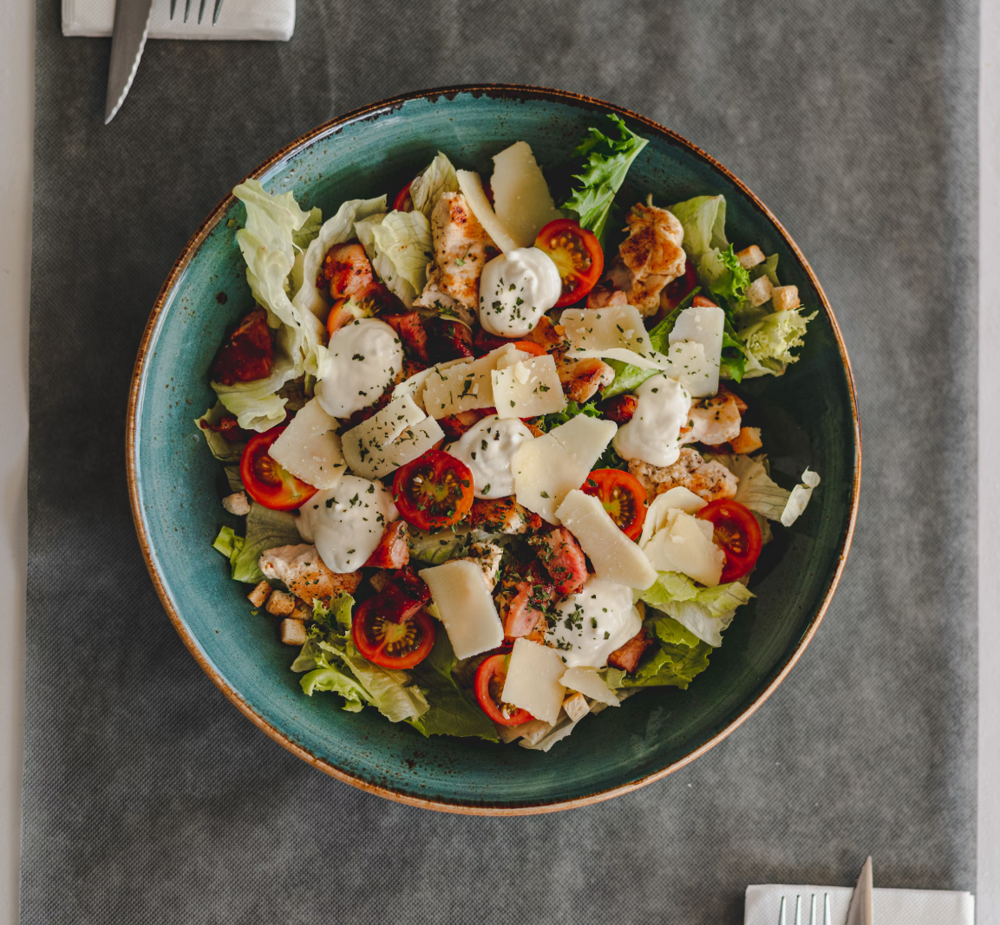

Greek Salad

Description
A fresh and vibrant Mediterranean salad full of flavor and color. Ideal as a side dish or a light lunch.
Simple, healthy, and quick to prepare — made with juicy vegetables, briny olives, and tangy feta cheese.
Ingredients:
- 2 tomatoes, cut into wedges
- 1 cucumber, sliced
- ½ red onion, thinly sliced
- 100g feta cheese, crumbled
- Handful of black olives
- 1 tbsp olive oil
- 1 tsp dried oregano
- Salt and pepper to taste
Steps:
- Chop all vegetables into bite-sized pieces.
- Combine in a bowl with olives and feta.
- Drizzle with olive oil.
- Sprinkle oregano, salt, and pepper. Toss and serve.